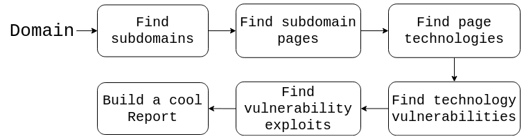
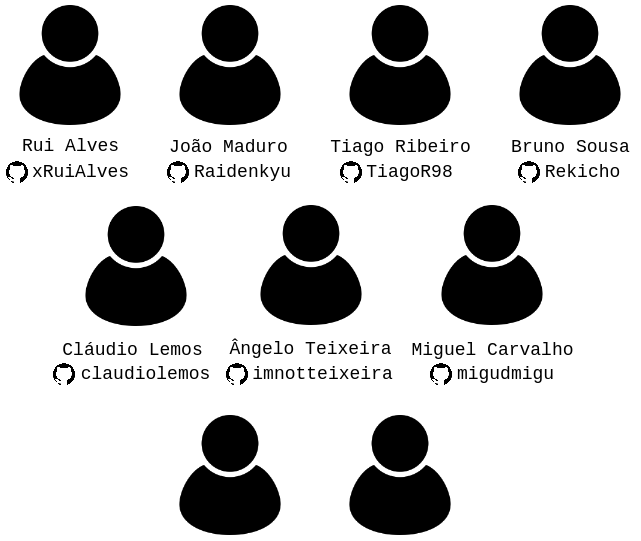
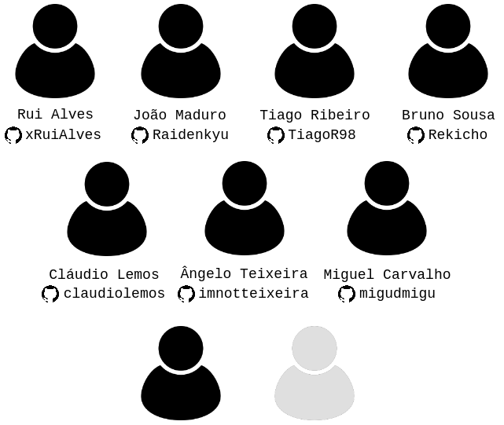
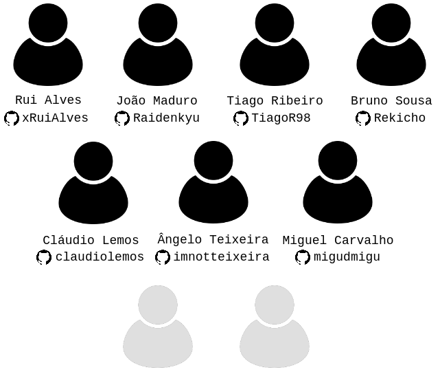

WVAT
Automating web software version auditing with WVAT
Automating web software version auditing with WVAT
My name is Rui Alves and I'm a Computer Engineering MSc (4/5 years) student @FEUP
I like software development in general and I play a lot of chess. I do mostly web development and random programming challenges.
You can find my projects at github.com/xRuiAlves
DISCLAIMER: I'm not a security guy!
I'm also part of the 75% of people that are afraid to speak in public 
WVAT (Web Vulnerability Assessment Tool) is an open-source CLI tool to analyse a domain, its subdomains and respective pages, extracting the used technologies to find their vulnerabilities in order to cross-reference them with known exploits.

To perform these tasks, various different tools are used! We'll get to that later.
This project was proposed as part of the Software Development Lab course @MIEIC, FEUP (4th year, 1st semester course).
The proposers were João Pedro Dias, Pedro Sousa and Luís Catarino (special props to João Pedro Dias, who helped us a lot during development), security professionals and/or enthusiasts, as they realized that there was no similar aggregated solution for the problems this tool solves.
Side Note: The LDSO course allows random people to propose projects for students to tackle. You can contact the course's teachers if you have a project to propose (you can talk to me after the presentation for more info)
The team consisted of 9 people, all from MIEIC.

The team consisted of 9 people 8 people, all from MIEIC.

The team consisted of 9 people 8 people 7 people, all from MIEIC.


./wvat analyse ruialves.me \
--crawlingTimeout 45 \
--timeout 300 \
--depth 3 \
--verbose \
--graph \
--config wvat-config.json
If everything goes well, 4 subdomains should be found and analysed! If not, I'll probably think about some good excuse!
The whole tool was built using NodeJS (sorry, we didn't use Python ). We also used the oclif CLI framework to make the user interface development easier.
To crawl the domain subdomains, we used amass, by calling the binary directly and parsing the generated output.
To crawl all subdomains pages, we used js-crawler (a pretty cool node module).
Especially for bigger crawling depths, this process can take a LONG time. For that reason, it's good to allow some sort of caching. We are using the node-persist module to store crawling results, which can be optionally reused.
To find technologies present in a webpage, we used multiple sources and intersected the data (to allow finding more technologies and have better versioning info):
Wappalyser - the node module versionWebtech - using the binary directly and parsing the generated outputToolbar Netcraft - scraping the web page to get resultsWe're using cve mitre as vulnerabilities database. Since they allow full database downloading, to make the process faster, the database is downloaded on tool usage and parsed (removing headers plus some minor tweaks), being used as a local cache.
To do a full-text-search-sort-of-thing on the technology, we are using egrep (grep with regex) with some tweaks. This actually provides very good results in little execution time!
There are many cool exploit databases out there. In this part we just provide links to the databases that may contain relevant exploits to the found CVEs:
Some minor network analysis is also made to the domain, in order to find location info, DNS information, IPs, et cetera.
The tool's behaviour can be manipulated with a configuration file.
It's important to provide a good way to visualize the results. For that reason, an HTML Report is built after the tool terminates the analysis.
A report from a sample analysis can be found here.
Moreover, to make integrations with other tools easier, we also provide a JSON format alternative (which is much more machine-friendly than html).
We also use an amass option to generate a cool network graph! A network graph page from another sample analysis can be found here.
Do feel free to ask questions!
You may contribute to the tool at
This presentation is available at